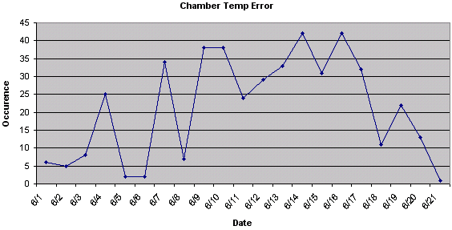
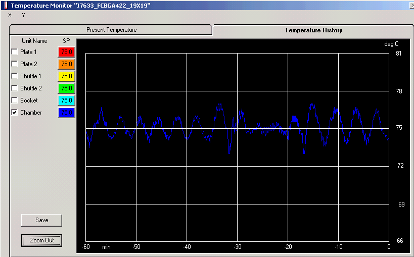
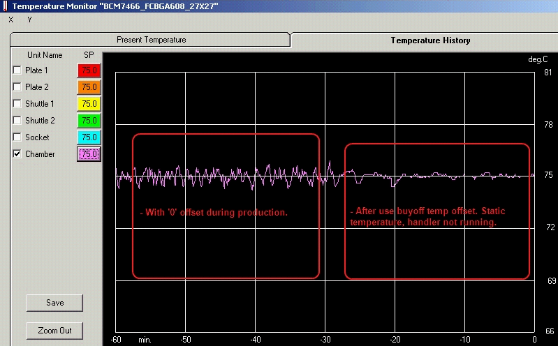
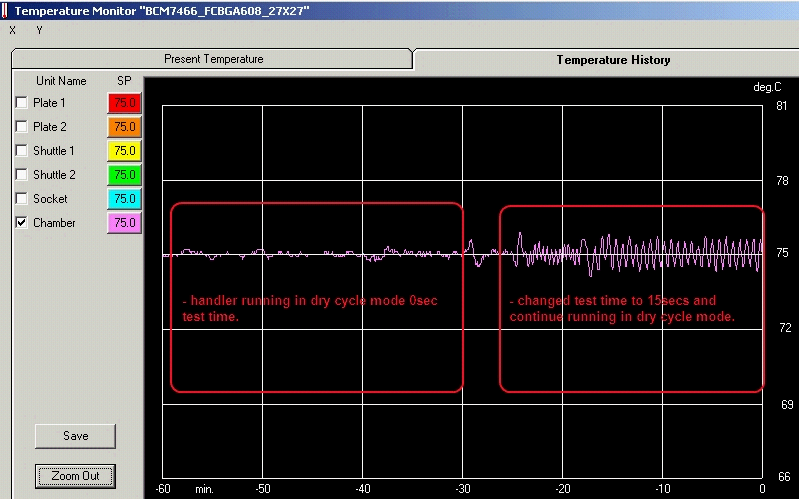
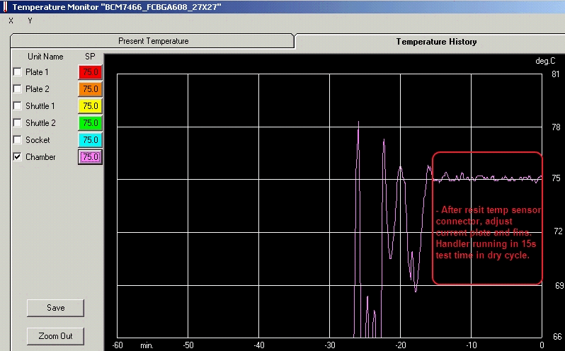
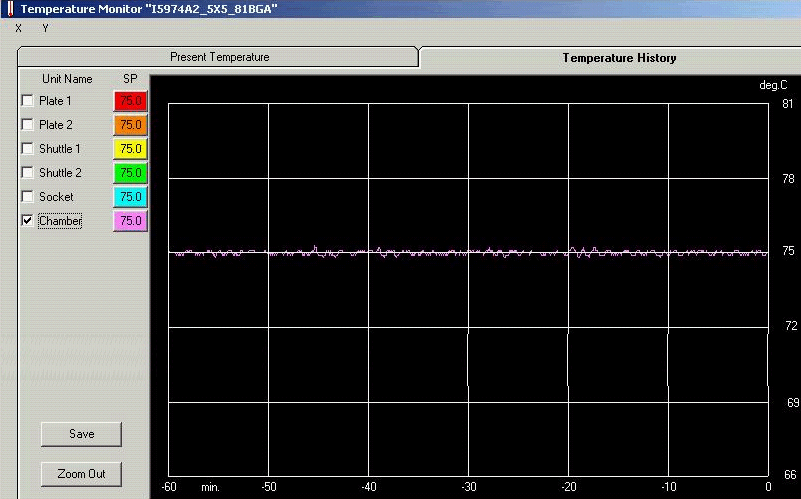

Service History
Subject: NS-8080 Chamber temperature fluctuate when running Hot at 75 DegC
Handler Model: NS-8080 (NS8080-11, S/N: 181805)
Controller: RC520
Date: 15 Jun 2010
Symptom
UTAC NS-8080 chamber temp fluctuate when running hot 75 deg.


Action
Found chamber fan not running in hot mode and some more no alarm.
Using a fan option for ambient mode was not checked.
Check option, switch to ambient mode and fan able to turn.
Switch back to hot mode, fan able to turn also.
Under monitoring.
25 Jun 2010
brief update on NS8080-11 chamber temp check today.
1. Below graphs on the left showed the fluctuation during production. The running setup is using 0 deg temp offset.
The graph on the right showed the static temp after we restored back the buyoff temp offset data.

2. After restored back buyoff temp offset data, we ran the handler in dry cycle mode with 0sec test time.
Then we change the dummy test time to 15secs and we could see some fluctuations.

3. We re-sit the chamber temp sensor connector, adjust the current plate(8NS13-17) higher and open up the direction plates .Adjusted chamber thermal sensor cover & fin position.
We ran the handler again and the graph on the temp monitor window showed a much stable curve.

summary action:
-restore back original temp calibration offset data.
-re-sit chamber temp sensor connector
-adjust chamber current plate higher
-open up chamber direction plates
After above actions, the graph shown on the temp monitor window was much stable.
30 Jun 2010
There are still quite a number of Jam1506 and Jam1523 from the alarm log, and from the OEE activity, there was a report that they found the chamber fan not turning this morning 30 Jun.
FYI, this handler is running dual site single DUT A with Dut B empty(there's a opening gap). Not sure if this will affect the temp stability of the chamber, but according to ah soon, he already tried to cover up the gap and that was before our action last friday.
Cause
21 Jul 2010
Pls see from event #7851 onwards, I input some remarks on the right side on those chamber temp error jam1523 and jam1506. Some of the remarks are tallied from their OEE activities. And I have some questions below.
1. How do we know if door open/close in the event log is for chamber door or handler door?
2. What is the difference between jam1523 and jam1506? They are both CH6 temperature control error (Chamber).
3. Event #8393,8430 and 8519 are all jam1506. Before error, there are no door open/close. What could be the possibilities?
They found chamber fan not turning without any alarm again yesterday. And i checked the temp graph, although fluctuation on the graph seems better than before, we still can see the 'up' and 'down'. The graph for other handler is more of a straighter curve. So pls check with Japan regarding 1) chamber fan not turning in hot mode without alarm, 2) possible cause to the fluctuation and how to achieve better temp graph.

23 Jul 2010
1. Event log for Door open/close
This is handler door.
There is no record of chamber door.
> Noted. But I think better to have chamber door open/close record in event also.
2. What is difference between Jam1523 and 1506?
Jam 1523 is occurred when the error is detected while the handler is running.
Jam 1506 is occurred when the error is detected while the handler is stop.
> Noted. But this was not explain clearly in the alarm and countermeasure manual.
3. This is monitoring while the handler is stop.
So, it has some of reason for the situation.
Ex: Re-dock the test dead with socket.
> Noted as above that J1506 occurred while handler is stopped. But there was no door open/close event, which means not possible to open handler door > chamber door to remove docking screws to undock. So I guess still unknown.
4. What is possibility of chamber fan not turning without any alarm
Break down chamber fan error signal wire.
If the wire is broken (open), the handler can not detect any chamber fan condition.
So, it will be happened chamber fan is not turning without any alarm.
The Chamber Fan SPEL CT Output bit are OUT272 and 273 to start/stop Chamber Fan.
Note: When the chamber fan does not move during hot mode,
Chamber temperature may have rising up continuously.
Please watch out the condition.
> Pls confirm in details which error signal to check. Is it wiring manual page 113 input IN281 or page 118 fan driver control. To simulate error I/O working or not, can I just pull out fan driver to fan connector and start hot mode to see whether any fan malfunction alarm?
Chamber fan error signal is chattering.
It will be occurred the process as follows;
- Detect abnormal chamber fan, error show on the display.
- Pause + Reset
- Clear the abnormal chamber fan condition by unusual factor.
- Start
- The handler is running but chamber fan is not running.
Note: We did not find any error log about chamber fan.
So, we guess first case is high possibility.